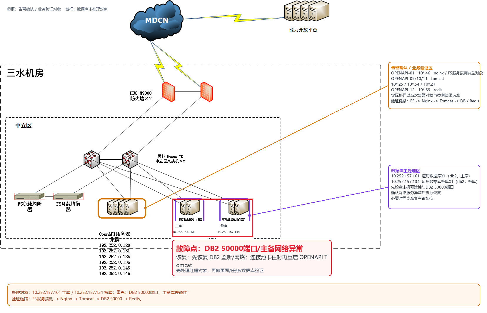

OPENAPI - 数据库服务器网络服务异常 故障处置手册
故障拓扑

图中橙框为 OpenAPI 告警与业务验证对象，紫框为数据库主备处理对象。处置时优先核对数据库主机网络服务、DB2 监听和 50000 端口，不应只依据告警对象名称定位单台 OpenAPI 机器。
关键对象：
10.252.157.161：当前主库，重点确认主机可达性、DB2 监听和50000端口。10.252.157.134：当前备库，主库异常时同步确认可达性。OPENAPI-09 / 10 / 11：Tomcat 应用节点，用于执行数据库拨测、日志检查和接口验证。OPENAPI-01：Nginx / F5 拨测侧典型对象；告警显示为 01 时，不代表只处理 01。OPENAPI-12：Redis 节点，数据库恢复后作为缓存链路补充验证。
历史记录中标记为数据库类口径的 OPENAPI 故障统一归并到本手册，不再单独维护独立数据库类指引。
故障点标注与恢复对象
红框为本次故障优先处理点；恢复后再按蓝框/依赖链路完成验证。
| 标注 | 故障点/现象 | 优先恢复动作 | 需要重启/执行的服务 |
|---|---|---|---|
| 红框 | 10.252.157.161 主库、10.252.157.134 备库或 DB2 50000 端口异常 | 先恢复 DB2 监听、主备网络连通和数据库状态 | DB2 监听/网络服务，具体服务名以现场为准 |
| 后续 | DB2 恢复后 OPENAPI 仍连接失败 | 刷新连接池或重启受影响 Tomcat 节点 | OPENAPI Tomcat/应用服务 |
适用范围与故障判定
适用范围
遇到以下任一现象，进入本手册流程处理：
OpenAPI页面无法访问，或接口调用集中超时。- 数据库
50000端口状态返回False，例如XJ_大数据_OpenAPI_数据库_50000端口状态_OPENAPI-01。 - 能运 OpenAPI 接口成功率异常，尤其低于
80%。 - 信令接口拨测日志值超过
2000，例如XJ_openapi_信令接口拨测-实时接口*状态_27。 - 应用日志集中出现
connection、timeout、datasource、db2、sql、50000等数据库相关报错。
判定规则
| 如果看到 | 先做什么 | 判断结论 |
|---|---|---|
多台 OpenAPI 节点都报数据库 50000 不通 | 登录 OPENAPI-09 / 10 / 11 任一应用节点拨测主备库 | 优先按数据库侧链路异常处理 |
| 页面不可用但 Tomcat 进程仍在 | 查应用日志是否集中报数据库连接异常 | 不要先重启 Tomcat，先确认数据库链路 |
信令接口日志值超过 2000 | 查数据库端口和 Tomcat 日志 | 多数情况下是数据库不可达拖慢接口 |
数据库端口恢复 OK 但页面仍异常 | 查连接池、日志和接口返回 | 可能需要应用侧刷新连接池或滚动恢复 |
标准处置流程
- 记录告警时间、告警对象、成功率或当前值、受影响业务。
- 登录
OPENAPI-09 / OPENAPI-10 / OPENAPI-11任一应用节点。 - 对照故障拓扑确认 OpenAPI 告警对象、应用节点和数据库主备关系。
- 拨测数据库主备和
50000端口。 - 查询信令接口耗时和 Tomcat 应用日志，确认是否存在数据库连接异常。
- 若数据库主备不可达或
50000返回False，通知亚信数据库团队处理数据库主机网络服务和 DB2 监听。 - 数据库恢复后，按恢复验证清单逐项确认，不以单一页面打开作为恢复依据。
关键检查命令
1. 拨测数据库主备和 50000 端口
在 OPENAPI-09 / OPENAPI-10 / OPENAPI-11 任一应用节点执行：
bash
ping 10.252.157.161
ping 10.252.157.134
for ip in 10.252.157.161 10.252.157.134; do
(timeout 1 bash -c "cat < /dev/null > /dev/tcp/$ip/50000" >/dev/null 2>&1) \
&& echo "$ip OK" || echo "$ip False"
done- 返回
OK：数据库端口可达，继续查接口耗时和应用日志。 - 返回
False：数据库端口不可达，优先通知数据库团队，不要把问题扩大成 Tomcat 故障。 - 主备都不可达，或多台应用节点都返回
False：按数据库主机网络服务异常升级处理。
2. 查信令接口拨测日志
用于判断外部接口耗时是否持续超过阈值，并结合数据库端口结果确认是否由数据库不可达引起。
bash
cd /opt/tomcat/apache-tomcat-7.0.77/bin/logs
LOG="catalina.$(date +%Y-%m-%d).log"
PATTERN="com.gmcc.realUsrAreaInfo;ESBURL"
tail -n500 "$LOG" \
| grep "$PATTERN" \
| grep -v 'start httpclient.execute....' \
| awk -F ':' '{sub(/ms$/," ",$NF);print $NF}'- 持续超过
2000：按接口异常继续跟踪，并结合数据库端口结果判断是否由数据库不可达引起。 - 恢复后应回落到
0-2000区间。
3. 查 Tomcat 进程和数据库报错
用于确认 Tomcat 是否仍在运行，并快速筛选连接失败、超时、DB2、SQL 和 50000 端口相关错误。
bash
ps -ef | grep tomcat | grep -v grep
cd /opt/tomcat/apache-tomcat-7.0.77/bin/logs
tail -n200 catalina.$(date +%Y-%m-%d).log \
| grep -Ei "connection|timeout|datasource|db2|sql|50000|realUsrAreaInfo"如果日志集中出现数据库连接异常、配置读取失败、日志写入失败，说明应用侧表现只是结果，主处理对象仍是数据库主机网络服务或 DB2 监听。
协同分工与通知口径
通知口径
可以直接按下面口径同步：
谁负责什么
| 角色 | 负责范围 | 处置动作 |
|---|---|---|
| 一线运维 | 告警确认、应用节点拨测、业务验证 | 执行端口拨测、日志检查和恢复验证 |
| DBA / 亚信数据库团队 | 数据库主机网络服务、DB2 监听、主备状态 | 恢复数据库主机网络服务或 DB2 监听，反馈数据库链路状态 |
| 开发 / 厂商 | 数据库恢复后仍异常的应用链路 | 排查连接池、重试、配置读取、写日志和接口耗时问题 |
恢复验证清单
数据库团队反馈恢复后，按下面顺序验证：
10.252.157.161 / 10.252.157.134至少一侧数据库链路稳定可达。- 数据库
50000端口拨测返回OK。 - 信令接口拨测日志值回落到
0-2000。 - 能运 OpenAPI 接口成功率恢复正常，且不低于
80%。 网格通、和商汇断卡、实时销量、全域旅游等关键业务恢复。- OpenAPI 日志不再持续出现数据库连接异常、配置读取失败或日志写入失败。
- 若页面仍不可用，再通知开发或厂商检查连接池和应用进程，不要重复通知数据库团队做同一动作。
根因与预防
根因判断
直接根因：数据库服务器网络服务异常，导致主库或备库在故障期间不可达。应用表现：OpenAPI 页面或接口异常，日志集中出现数据库连接、配置读取或写日志报错。结论：此类故障归类为数据库服务器网络服务异常，不再单独维护独立数据库类处置路径。
长期预防
- 增加数据库主机
ping、数据库端口可达性、DB2 监听与实例状态的组合监控。 - 对 OpenAPI 增加 HTTP 成功率、接口调用成功率、数据库连接异常次数、
50000端口状态和信令接口拨测日志值的分钟级监控。 - 固化数据库主备切换演练流程，至少按报告要求在月内完成一次应急演练。
- 故障恢复后增加数据波动复核步骤，避免把业务正常波动误判为残余故障。
历史案例
| 序号 | 发生时间 | 故障现象 | 恢复手段 | 故障原因 | 处理时长 |
|---|---|---|---|---|---|
| 23 | 2026-04-01 08:58 | 页面无法访问 | 数据库组处理 | 数据库网络服务异常 | 35min |
| 50 | 2026-04-30 15:34 | 页面无法访问 | 数据库组处理 | 数据库网络服务异常 | 5min |